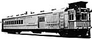

Brass Shapes Conversions
Brass Shapes Conversions
These are scale conversion charts for channels, I-beams, H-columns, tubing and such. I created these charts for all of the Special Shapes Co. brass shapes so I could correlate the item number and size with its scale equivalent.You can use these charts to find the closest size for prototype structural members, or you can convert from magazine articles that give the size in inches for a certain scale. If the article mentions using 5/16 x 3/8 square tubing for a detail in HO scale, you can look up the scale dimensions for that tubing and find the matching tubing for your scale.
I have divided the items up to match Special Shapes Co. current catalog as of 6-96. All files are plain text files for you to save and print out if you wish. Use your browser's "Back" button to return to this page.
If you have comments, suggestions on what you would like to see
or data you might like, you can email me at:
Rick Blanchard - rick@urbaneagle.com

--Back to da data.--